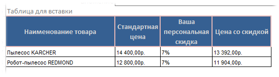
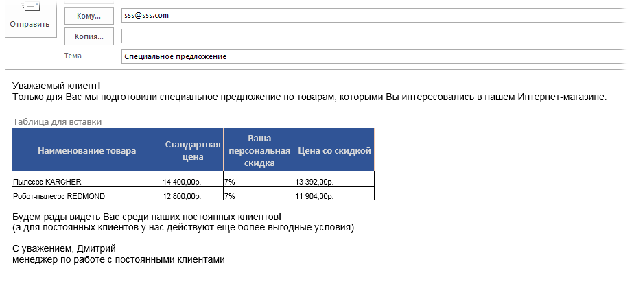
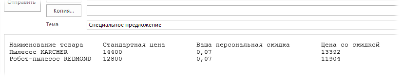

Пример вставки таблицы в письмо Outlook.xls (67,5 KiB, 329 скачиваний)
Пример вставки таблицы в письмо Outlook.xls (67,5 KiB, 329 скачиваний)Вставить в письмо Outlook таблицу Excel с форматированием
Про создание писем в Outlook через Visual Basic for Applications(VBA) Excel я уже писал пару статей, в том числе и о том, как вставить одну из стандартных подписей в письмо - Вставить в письмо подпись из Outlook через VBA(по умолчанию при создании писем из VBA подпись не вставляется, даже если это настроено параметрами почты). Но т.к. отправка происходит из Excel, то часто возникает и другой вопрос - как в письмо вставить не просто текст, а целую таблицу? Да еще со всем форматированием ячеек? Если речь о ручной вставке, то тут все просто: скопировали диапазон, перешли в письмо - вставили. Но если попробовать тоже самое кодом (через копировать-вставить) - ничего не получится(у Outlook просто нет метода Paste или что-то вроде того). Можно использовать метод SendKeys, но он весьма нестабилен и я стараюсь его вообще нигде не применять, только в случаях, когда по-другому ну вообще никак. Если же переносить таблицу кодом вроде такого:
.Body = Range("A1").Value & Range("A2").Value
то это будут только значения ячеек, но не их форматирование и уж никак не таблица.
Все дело в том, что таблица в теле письма это отдельный объект формата HTML. И при вставке через копировать-вставить руками Excel и Outlook делают за нас всю грязную работу по перекодировке скопированного в нужный формат HTML. А значит и нам надо каким-то образом конвертировать нужные ячейки в этот формат, да еще учесть всё форматирование. К примеру, есть такая таблица:

рис.1
Теперь эту таблицу надо вставить в письмо вместе с остальным текстом, чтобы было что-то вроде:

рис.2
Чтобы конвертировать нужные ячейки в самостоятельную таблицу в формате HTML я использую такую функцию:
Function ConvertRngToHTM(rng As Range) Dim fso As Object, ts As Object Dim sF As String, resHTM As String Dim wbTmp As Workbook sF = Environ("temp") & "/" & Format(Now, "dd-mm-yy h-mm-ss") & ".htm" 'переносим указанный диапазон в новую книгу rng.Copy Set wbTmp = Workbooks.Add(1) With wbTmp.Sheets(1) 'вставляем только ширину столбцов, значения и форматы .Cells(1).PasteSpecial xlPasteColumnWidths .Cells(1).PasteSpecial xlPasteValues .Cells(1).PasteSpecial xlPasteFormats .Cells(1).Select Application.CutCopyMode = False 'удаляем все объекты(фигуры, рисунки и пр.) '------------------------------------------ 'если рисунки и объекты нужны - удалить этот блок On Error Resume Next .DrawingObjects.Visible = True .DrawingObjects.Delete On Error GoTo 0 '------------------------------------------ End With 'сохраняем книгу как Веб-страницу(чтобы содержимое конвертировать в HTML-код) With wbTmp.PublishObjects.Add( _ SourceType:=xlSourceRange, Filename:=sF, _ Sheet:=wbTmp.Sheets(1).Name, Source:=wbTmp.Sheets(1).UsedRange.Address, _ HtmlType:=xlHtmlStatic) .Publish (True) End With 'открываем созданный файл как текстовый и считываем содержимое Set fso = CreateObject("Scripting.FileSystemObject") Set ts = fso.GetFile(sF).OpenAsTextStream(1, -2) resHTM = ts.ReadAll ts.Close 'выравниваем таблицу по левому краю(если надо оставить по центру - удалить эту строку) ConvertRngToHTM = Replace(resHTM, "align=center x:publishsource=", "align=left x:publishsource=") 'закрываем временную книгу и удаляем wbTmp.Close False Kill sF 'очищаем объектные переменные Set ts = Nothing: Set fso = Nothing Set wbTmp = Nothing End Function
Все, что остается - это в нужный момент вызвать эту функцию и вставить в нужное место письма.
Например, для конвертации в текст HTML выделенного на листе диапазона необходимо выполнить код:
Dim sTblBody As String sTblBody = ConvertRngToHTM(Selection)
|
1 2 |
Чтобы создать письмо в Outlook и вставить туда эту таблицу можно использовать такой код:
Sub Send_Mail() Dim objOutlookApp As Object, objMail As Object Application.ScreenUpdating = False On Error Resume Next Set objOutlookApp = CreateObject("Outlook.Application") objOutlookApp.Session.Logon Set objMail = objOutlookApp.CreateItem(0) 'создаем новое сообщение If Err.Number <> 0 Then Set objOutlookApp = Nothing: Set objMail = Nothing: Exit Sub On Error GoTo 0 'создаем сообщение With objMail .To = "адрес получателя" .Subject = "Тема: тест вставки таблицы" .BodyFormat = 2 'olFormatHTML - формат HTML .HTMLBody = ConvertRngToHTM(Selection) .Display 'отображаем сообщение End With Set objOutlookApp = Nothing: Set objMail = Nothing Application.ScreenUpdating = True End Sub
Более подробно про создание и отправку писем из Excel я писал в этой статье: Как отправить письмо из Excel?
По сути основная задача выполнена, теперь вы сможете вкладывать в сообщение таблицу без потери форматирования.
Скачать файл:
Пример вставки таблицы в письмо Outlook.xls (67,5 KiB, 329 скачиваний)
В файле-примере, приложенном к статье, более расширенный вариант кода, который оформлен более удобно, там можно задать в ячейках адрес получателя, тему письма и текст письма. Плюс помимо описанного выше добавляет форматирование к письму, проставляет корректные переносы и непосредственно вставляет таблицу в любое место письма.
За форматирование(назначает шрифт Arial, размер 14) отвечает строка:
sBody = "<span style=""font-size: 14px; font-family: Arial"">" & sBody & "</span>"
|
1 |
sBody = "<span style=""font-size: 14px; font-family: Arial"">" & sBody & "</span>" |
Полагаю, несложно догадаться где изменить размер шрифта и его имя. Так же можно и иное форматирование применять, если Вам знакомы основы работы с HTML.
Корректные для HTML переносы строк текста
'Переносы строк и шрифт sBody = Replace(sBody, Chr(10), "<br />") sBody = Replace(sBody, vbNewLine, "<br />")
|
1 2 3 |
Про вставку таблицы следует расписать чуть подробнее. В примере в ячейку B13 записан следующий текст:
Уважаемый клиент!
Только для Вас мы подготовили специальное предложение по товарам, которыми Вы интересовались в нашем Интернет-магазине:
{TABLE}
Будем рады видеть Вас среди наших постоянных клиентов!
(а для постоянных клиентов у нас действуют еще более выгодные условия)
С уважением, Дмитрий
менеджер по работе с постоянными клиентами
красным специально выделен тег {TABLE}. Именно на место этого тега будет вставлена таблица, созданная из указанного диапазона и результат будет как на рис.2(см.выше). Эту метку можно вставлять в любое место и именно туда будет помещена таблица.
В коде диапазон вставляемой таблицы указывается в строке:
Set rDataR = .Range("A15:D18") 'Selection - если надо отправить только выделенные диапазона
|
1 |
Set rDataR = .Range("A15:D18") 'Selection - если надо отправить только выделенные диапазона |
Его можно изменить на любой необходимый.
Что важно помнить: если помимо вставки таблицы Вы планируете форматировать письмо другими тегами HTML, то лучше сначала сделать все форматирование и только в самом конце, самым последним шагом, добавлять таблицу в письмо. Иначе разметка таблицы может "поплыть".
Надеюсь теперь Вам не составит труда сделать свои сообщения более красивыми и аккуратными.
Понимаю, что многие захотят сделать из этого массовую рассылку. Для этого придется совместить код из этой статьи с кодом из статьи Как отправить письмо из Excel?. Там есть пример отправки писем через Outlook списку получателей.
Решил дополнить статью простенькой функцией, которая не сохраняет никаких файл, форматированных таблиц и практически не делает лишних движений. Она просто в письмо вкладывает значения всех ячеек указанного диапазона простым текстом, без форматирования(разве что добавил переносы строки и табуляцию, чтобы соблюдался хоть какой-то табличный вид и текст не был одной единой строкой):
'--------------------------------------------------------------------------------------- ' Author : The_Prist(Щербаков Дмитрий) ' Профессиональная разработка приложений для MS Office любой сложности ' Проведение тренингов по MS Excel ' http://www.excel-vba.ru ' Purpose: функция объединяет значения указанного диапазона ячеек в строку ' разрывы между столбцами заменяются табуляцией ' разрывы между строками заменяются переносами на строки '--------------------------------------------------------------------------------------- Function RangeToTextTable(rng As Range) Dim lr As Long, lc As Long, arr Dim res As String arr = rng.Value If Not IsArray(arr) Then ReDim arr(1 To 1, 1 To 1) arr(1, 1) = rng.Value End If For lr = 1 To UBound(arr, 1) For lc = 1 To UBound(arr, 2) If lc = 1 Then res = res & arr(lr, lc) Else res = res & vbTab & arr(lr, lc) End If Next res = res & vbNewLine Next RangeToTextTable = res End Function
Вставляем значения ячеек при помощи этой функции в письмо:
'создаем сообщение With objMail .To = "адрес получателя" .Subject = "Тема: тест вставки таблицы" '.BodyFormat = 2 'уже не надо, т.к. форматирования нет .HTMLBody = RangeToTextTable(Selection) .Display 'отображаем сообщение End With
|
1 2 3 4 5 6 7 8 |
.Subject = "Тема: тест вставки таблицы" '.BodyFormat = 2 'уже не надо, т.к. форматирования нет .HTMLBody = RangeToTextTable(Selection) |
Здесь следует помнить, что "таблица" после такой вставки будет выглядеть не очень красиво. И речь не о цвете заголовков - при различной длине текста внутри ячеек текст в письме будет сдвигаться:
чтобы этого как-то избежать, можно чуть модифицировать функцию:
'--------------------------------------------------------------------------------------- ' Author : The_Prist(Щербаков Дмитрий) ' Профессиональная разработка приложений для MS Office любой сложности ' Проведение тренингов по MS Excel ' http://www.excel-vba.ru ' WebMoney - R298726502453; Яндекс.Деньги - 41001332272872 ' Purpose: функция объединяет значения указанного диапазона ячеек в строку ' разрывы между столбцами заменяются табуляцией ' разрывы между строками заменяются переносами на строки '--------------------------------------------------------------------------------------- Function RangeToTextTable(rng As Range) Dim lr As Long, lc As Long, arr Dim res As String, rh() Dim lSpaces As Long, s As String arr = rng.Value If Not IsArray(arr) Then ReDim arr(1 To 1, 1 To 1) arr(1, 1) = rng.Value End If ReDim rh(1 To UBound(arr, 2)) For lr = 1 To UBound(arr, 1) For lc = 1 To UBound(arr, 2) If Len(arr(lr, lc)) > rh(lc) Then rh(lc) = Len(arr(lr, lc)) End If Next Next For lr = 1 To UBound(arr, 1) For lc = 1 To UBound(arr, 2) s = arr(lr, lc) lSpaces = rh(lc) - Len(s) If lSpaces > 0 Then s = s & Space(lSpaces) End If If lc = 1 Then res = res & s Else res = res & vbTab & s End If Next res = res & vbNewLine Next RangeToTextTable = res End Function
и назначить шрифт для писем по умолчанию Courier New или любой другой мноноширный шрифт. Тогда можно получить примерно такой результат:

Если использовать не моноширный шрифт, то визуально таблица все равно будет неравной и смысла в модификации функции нет.